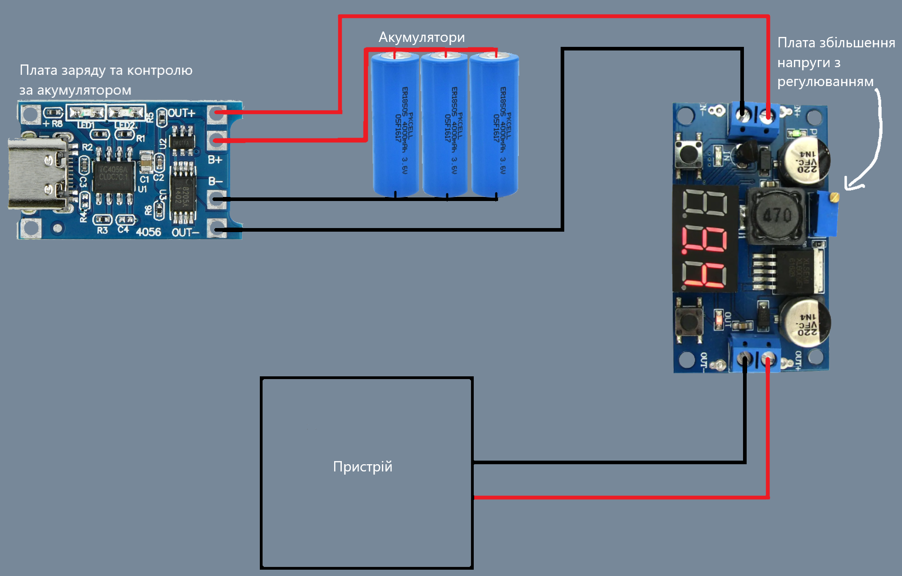

Після недавніх масивних обстрілів енергосистем україни ми всі стикнулися з проблемою відсутності світла. Нажаль простого павербанка зовсім не достатньо для вирішення даної проблеми.
Коли відсутній струм немає і інтернету, і адекватного освітлення, а так як раніше я займався електротехнікою хочу показати як власними руками зробити акумуляторний блок живлення для різноманітних приладів.
Ми розглянемо багато варіантів з різним кошторисом та доступністю матеріалів так як даний пристрій може бути різної потужності, та і шлях його використання у кожного різний.
 Як бачите нічого важкого тут немає. Вам достатньо всього трьох компонентів, трішки дроту та паяльника.
Дана схема працює наступний образом: Ми заряджаємо акумулятори через плату заряду від любого зарядника для мобільного телефону(напруга має бути від 4 до 7.8 V), після чого струм з акумуляторів стабілізується та підсилюється до потрібної нам напруги(відрегулювати її можна покрутивши гвинтик на який вказує стрілка), до того ж ми можемо не боятися що акумулятори перезарядяться чи перерозрядяться або ж замкнуться так як на платі заряду є контролер який захищає від подібних казусів.